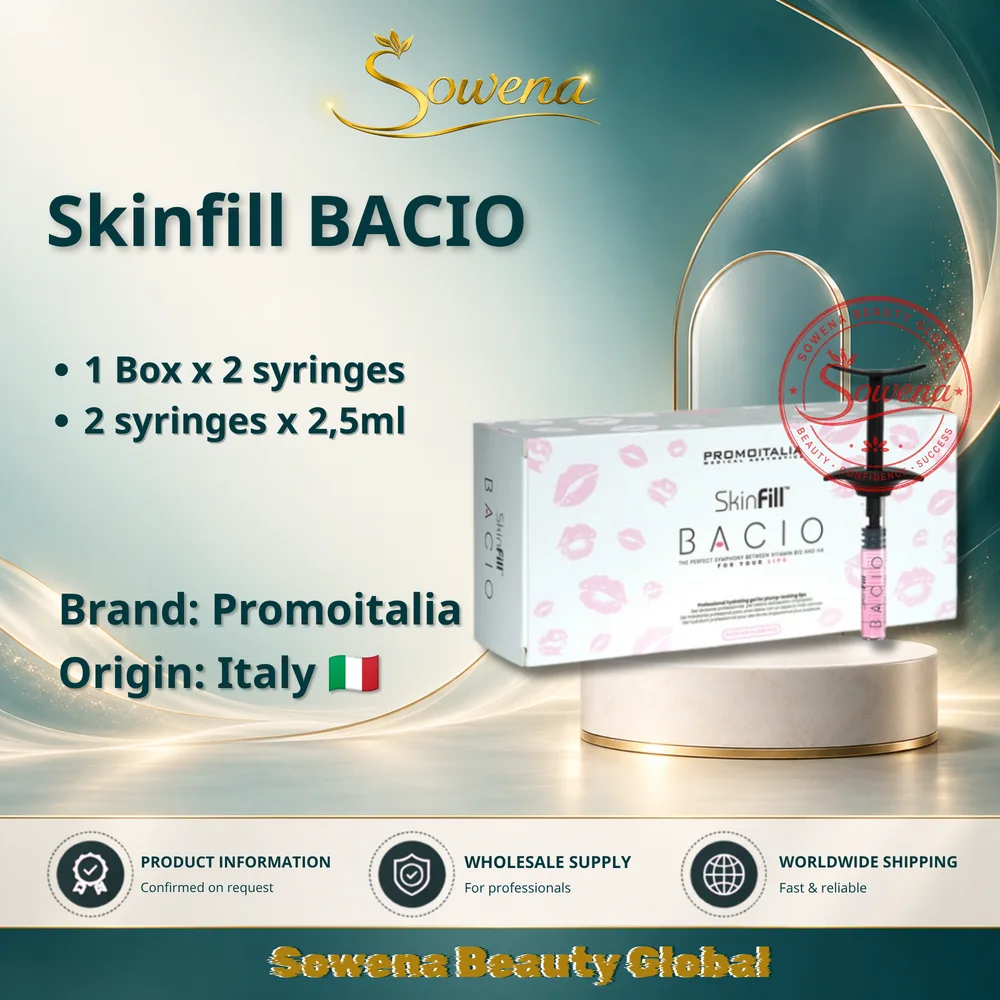
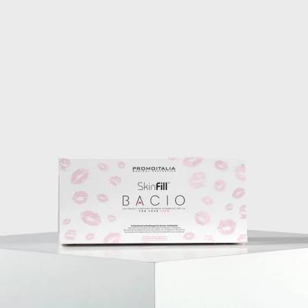

Skinfill Bacio is a professional lip-focused skin booster from Promoitalia, designed around hydration, lip definition and tissue quality support. For wholesale buyers, this means the product should be reviewed not only by price, but also by formulation, presentation, product media, intended professional use and official brand documentation.
This guide is written for clinics, distributors and global wholesale partners using the Sowena catalogue to review Skinfill Bacio before sending a focused quotation request.
What Skinfill Bacio is designed for
According to official Promoitalia product information, Skinfill Bacio is positioned as a lip booster for hydration, revitalization and definition without an exaggerated volume effect. In practical buyer language, it is relevant for professional settings where the goal is smoother-looking lips, improved moisture appearance and a more refined lip contour, while keeping the result natural-looking.
The product is not a casual consumer cosmetic. Buyers should treat it as a professional-use aesthetic product and follow local rules, clinic protocols and qualified-practitioner requirements in their market.
Key ingredients and functional role
The official Promoitalia US page describes Skinfill Bacio as a combination of Vitamin B12 and free hyaluronic acid in a fractioned molecular-weight matrix at a concentration of 20mg/ml. Promoitalia Brazil also lists Vitamin B12, free hyaluronic acid with fractioned molecular weight and the same 20mg/ml concentration.
- Hyaluronic acid: supports moisture retention and contributes to a hydrated, smoother-looking lip surface.
- Fractioned molecular weight: helps position the product as a multi-depth hydration and tissue-quality support option in professional protocols.
- Vitamin B12: supports the product's revitalizing positioning and gives the formula its recognizable pink tone.
- Professional pack format: official US product information lists each box as 2 syringes of 2.5ml each.
Visible changes buyers should understand
Skinfill Bacio content should stay realistic. The manufacturer positions the product around hydration, stimulation and refined definition. For end users, professional treatment protocols may be discussed in terms of lips appearing more hydrated, smoother, better-defined and less visibly dry. These are appearance-focused goals, not guaranteed medical outcomes.
This distinction matters for SEO and sales conversations. Strong product pages should explain the practical value clearly, but avoid promising exact results, treatment duration or clinical outcomes unless those details are confirmed by official documentation for the buyer's region.
Build a quotation request buyers can act on
A useful quotation request should be concise while still giving the supplier enough context to respond properly. Before sending a WhatsApp message, prepare these details.
- Product name: Skinfill Bacio.
- Estimated quantity or order range.
- Buyer type: clinic, distributor, wholesaler or partner.
- Destination country or region.
- Preferred timeline for quotation discussion.
- Related product names to compare in the same request.
Official brand and Sowena contact links
Use official brand pages to verify product claims, and use Sowena's direct channels when you are ready to discuss sourcing, MOQ, product comparison and quotation support.
- Promoitalia US: Skinfill Bacio Official product page with pack format, ingredients and stated benefits.
- Promoitalia Brazil: Skinfill Bacio Official regional brand page with product overview and active ingredients.
- Instagram Follow Sowena product updates and visuals.
- WhatsApp Request Skinfill Bacio quotation support.
- Telegram community Join the Sowena sourcing community.
Use category context to compare options
Skinfill Bacio belongs to the broader Meso / Skin Booster section of the Sowena catalogue. Buyers who are not final on one product can review the category first, then send a shortlist of names for a more organized sourcing conversation.
A category-based request is especially useful for distributors who need recurring product planning. It helps separate urgent product needs from future comparison topics without losing the main enquiry.
Keep the sourcing conversation professional
Product sourcing content should stay practical. Buyers should follow local regulations, internal purchasing rules and professional requirements in their own market. This article does not provide medical advice, treatment instructions or unsupported regulatory claims.
Useful next steps
Review the Sowena product catalogue to compare related products, learn more about the company on the brand page, and use the contact page or WhatsApp button when you are ready to request a Skinfill Bacio quotation.
Product images for buyer verification


FAQ
Who should read this Skinfill Bacio sourcing guide?
It is for clinics, distributors, wholesale buyers and aesthetic product partners preparing Skinfill Bacio sourcing enquiries.
What should buyers include in a Skinfill Bacio quotation request?
Include the product name, estimated quantity, buyer type, destination market, required timeline and any related products you want to compare.
Can product images support a better sourcing request?
Yes. Product images help confirm the exact catalogue item and reduce confusion when buyers discuss several products in one quotation request.